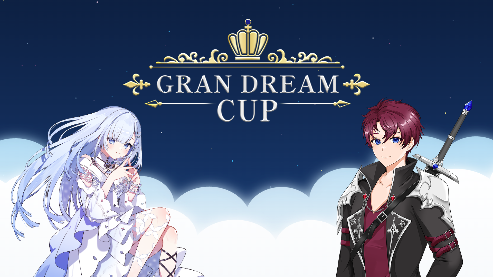
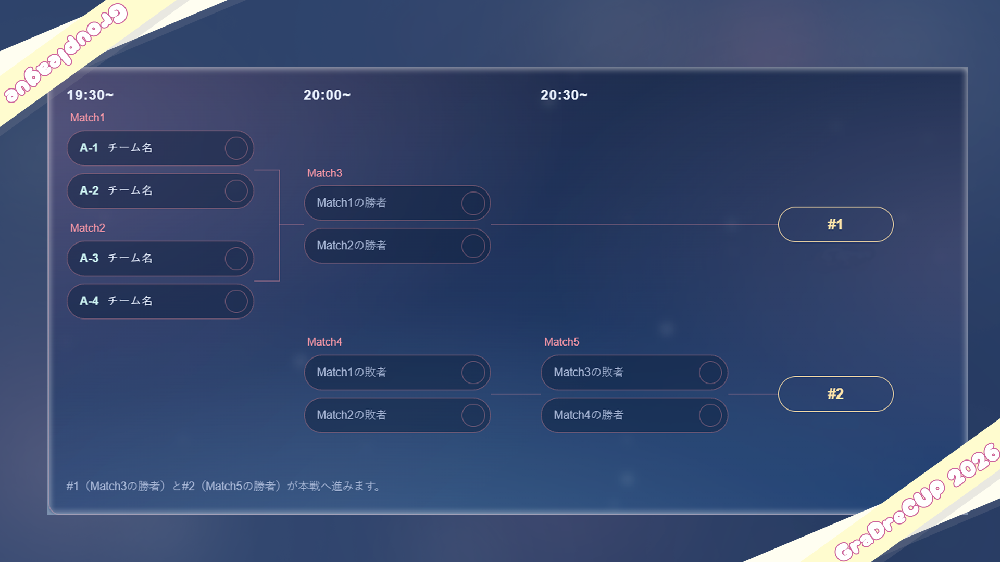
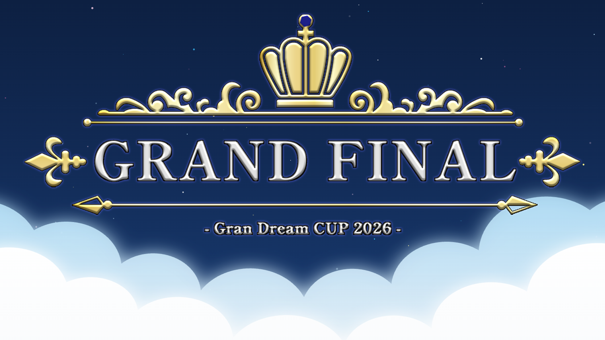
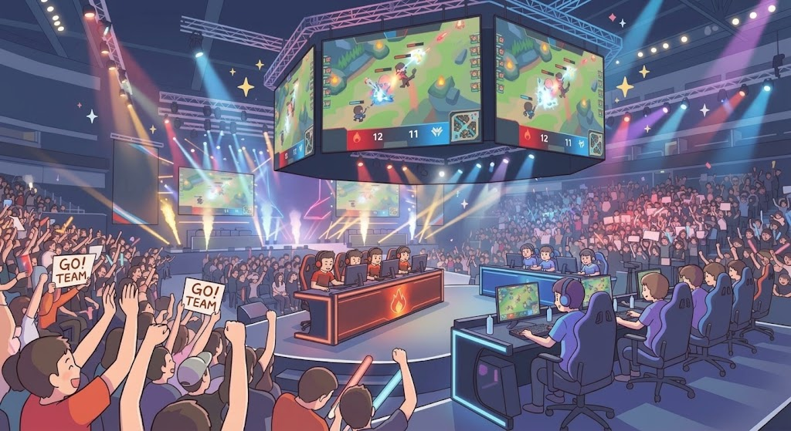

19:00~
開場
【案内】 参加チームは時間内にチェックイン
【備考】 配信・観戦ページ同時オープン

GranDream presents
- 2026.11.28 sat -

19:00~
【案内】 参加チームは時間内にチェックイン
【備考】 配信・観戦ページ同時オープン

19:30~
【形式】 4チーム×4グループ（ダブルエリミネーション）
【条件】 上位2チームが本戦進出
【ルール】 BO3（2本先取）/ Loser's Map Pick形式

21:00~
【形式】 本戦トーナメント（予選通過8チーム）
【アドバンテージ】 予選1位：Upper Bracket / 予選2位：Lower Bracket
【ルール】 BO3（2本先取）/ Loser's Map Pick形式

23:00~
【対戦】 Grand Final
【アドバンテージ】 無敗側チーム：全マップの選択権
【ルール】 BO5（3本先取）

01ナンプラー遺跡

02ヤガラ市場

03マテガイ放水路

04クサヤ温泉

05バイガイ亭

06タカアシ経済特区

07オヒョウ海運

08ザトウマーケット

09カジキ空港
直前のマップで敗北したチームが、次のマップを選択できる形式です。
● 1st MAP ： 全9マップから「おまかせ（ランダム）」で決定
● 2nd MAP ： 1st MAPで敗北したチームが1st MAPで使用したマップを除く【残り8マップ】から選択
● 3rd MAP ： 2nd MAPで敗北したチームが1st・2nd MAPで使用した2マップを除く【残り7マップ】から選択
※2勝先取（BO3）形式のため、1st・2nd MAPで決着がついた場合、3rdMAPは実施されません（1-1の場合のみ実施）

2敗するまで敗退とならないトーナメントシステムです。
参加者は1回負けてしまっても「ローワーブラケット」へ回ることで、そこから再び優勝を目指すチャンスが残されます。
両ブラケットをそれぞれ勝ち上がったチーム同士が決勝戦で激突するため、
実力が反映されやすく、ドラマチックな展開が生まれる方式として、多くのeスポーツやスポーツ大会で採用されています。
主催代表 あいさつ
左手が疼いている。だが、案ずるな。これは俺自身の都合などではない……お前たちのためだ。
この左手を酷使すれば、次に何が起こるか……俺にも分からん。だからこそ、二週目を選ぶ。
……勘違いするなよ。俺が助かるためじゃない。お前たちを無事に導くためだ。
GranDreamありが